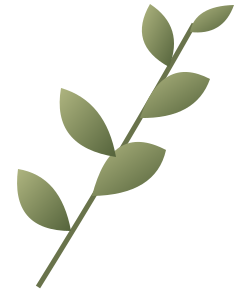
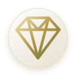
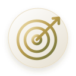
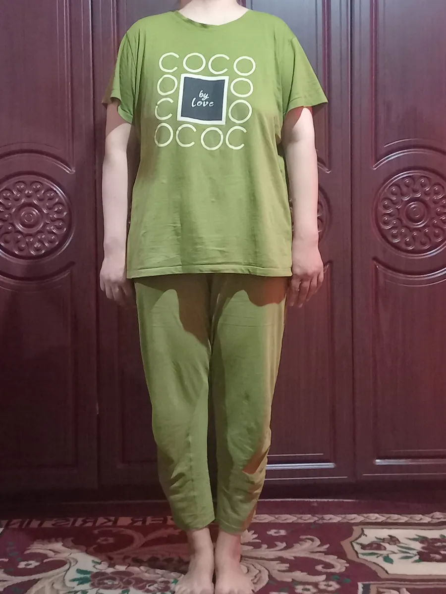
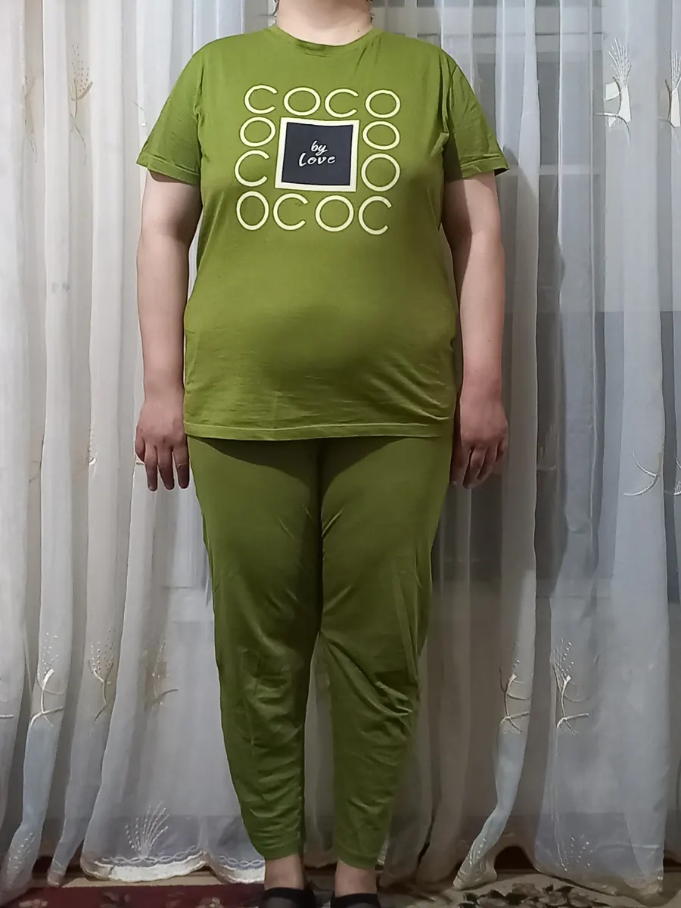

Sog‘lom ovqatlanish, mutaxassis tavsiyalari va doimiy nazorat bilan yangi odatlar sari qadam qo‘ying.
139 000 so‘mdan kuniga atigi 3 211 so‘mdan
YANGI MEN boshlanishiga · 1‑dekabr
05kun
11soat
27daqiqa
12soniya


Mehriniso Hamzabekovnavrach-dietolog, Stop Semizlik asoschisi
50 000+
ishtirokchi marafonimizdan o‘tgan
1,49 mln
Instagram kuzatuvchi
2019
yildan beri · 7 yillik tajriba
Uydagi ovqat bilanOila bilan bir dasturxonda, och qolmasdan
Har kuni qo‘llab-quvvatlashKurator yopiq Telegram guruhida yoningizda
Har kuni tayyor rejaErtalab ochasiz va nima qilishni bilasiz

Vrach-dietolog dasturiMualliflik darslari va mutaxassis nazorati
YANGI MEN marafoni: tarifingizni tanlang
Start: 1‑dekabr Muddat qancha uzun bo‘lsa, kuni shuncha arzon.
30 kun
Start / Ekspress
Tez start. Ovqatlanish tartibini yo‘lga qo‘yasiz.
139 000 so‘m
Kuniga atigi 4 633 so‘m
Yopiq Telegram guruhi
Kunlik ovqatlanish tavsiyalari
Vrach-dietologning mualliflik darslari
Kurator qo‘llab-quvvatlashi
Dietolog nazoratidagi ratsion
60 kun
Transformatsiya
Yangi odat o‘zingizniki bo‘lib qoladi.
199 000 so‘m
Kuniga atigi 3 317 so‘m
Yopiq Telegram guruhi
Kunlik ovqatlanish tavsiyalari
Vrach-dietologning mualliflik darslari
Kurator qo‘llab-quvvatlashi
Dietolog nazoratidagi ratsion
Eng foydali
90 kun
To‘liq o‘zgarish
O‘zgarishni mustahkamlab, saqlab qolasiz.
289 000 so‘m
Kuniga atigi 3 211 so‘mkuniga eng arzon
Yopiq Telegram guruhi
Kunlik ovqatlanish tavsiyalari
Vrach-dietologning mualliflik darslari
Kurator qo‘llab-quvvatlashi
Dietolog nazoratidagi ratsion
Har bir tarifda: Yopiq Telegram guruhi, kunlik ovqatlanish tavsiyalari, vrach-dietologning mualliflik darslari, kurator qo‘llab-quvvatlashi, dietolog nazoratidagi ratsion.
Bir martalik to‘lov, oylik to‘lov yo‘q. To‘lov yo‘riqnomasi Telegramda.
Marafonda nimalar beriladi
Bu shunchaki dieta emas, yangi odatlar sari to‘liq yo‘l.
Ovqatlanish ratsionlari
Video va audio darslar
Uy sharoitida mashqlar
Kurator nazorati
Mutaxassis tavsiyalari
Kundalik motivatsiya

Natijalarni kuzatish
Gormonal holat tahlili
Analiz natijalariga asoslangan tavsiyalar
Doimiy aloqa va qo‘llab-quvvatlash
Ishtirokchilarimiz natijalari
Ular ham xuddi siz kabi bir kuni boshlagan.


OldinKeyin
Oldin va keyin · surib solishtiring18 kunda −13 kg1 haftada −3,5 kg, yuz tiniqlashdi
M
Mamura G‘.marafon ishtirokchisi
88 → 81 kg
11 kunlik marafondan boshlab guruhga qo‘shildim. 88 kg edim, hozir 81 kg. O‘zimni juda yaxshi his qilyapman. Dieta bilan birga nonushta va salatlarni ham o‘rganib boryapmiz. Sizni topganimdan juda xursandman.
H
Homidova M.marafon ishtirokchisi
6 kunda −4,5 kg
Kutmagan natija: 6 kunda 71 kilodan 4,5 kg ozdim. Menyularingizga gap yo‘q, ovqatlarimizni doim tekshirib, maslahat berib turdingiz. 4 ta farzandim bor, shunday tetiklikka rostan havas qilardim. Hammasi uchun rahmat.
X
Xudoyberdiyevamarafon ishtirokchisi
1 haftada −3,5 kg
Bir haftalik natija: yuzim tiniq va −3,5 kg.
R
Robiya M.marafon ishtirokchisi
3 kunda −3 kg
3 kunda −3 kg. Bu men uchun juda katta yutuq.
Har kimning tanasi o‘ziga xos, natija ham shaxsiy. Biz har bir qadamingizda yoningizdamiz.
O‘zgarish uchun mukammal vaqtni kutmang.
Bugun o‘zingiz uchun birinchi qadamni qo‘ying.
Bu shunchaki dieta emas — yangi odatlar sari yo‘l.
Bu yo‘lda siz yolg‘iz emassiz.
Vrach-dietologStop Semizlik asoschisi
Rejangiz kimning qo‘lida
Vrach-dietolog Mehriniso Hamzabekovna
Siz rejaga amal qilasiz, qolganini mutaxassis o‘ylaydi.
Stop Semizlik asoschisi
O‘zbekistondagi top dietologlarning 90 foizi ustozi
Marafon darslari uning mualliflik ishi
Ko‘p beriladigan savollar
Javob topmasangiz, Telegramda so‘rang.
Tarifni tanlang va «Marafonga qo‘shilish»ni bosing. To‘lov yo‘riqnomasini Telegramda olasiz.
1‑dekabr kuni. Startgacha guruh havolasini olasiz.
Bu safar yolg‘iz emassiz. Har kuni tayyor ratsion keladi, kurator kuzatib boradi, reja dietolog tomonidan tuzilgan.
Yo‘q. Uydagi ovqatni to‘g‘ri miqdorda va to‘g‘ri tartibda, to‘yib yeysiz.
Bugun o‘zingiz uchun birinchi qadamni qo‘ying
Siz o‘zingizga yana bir imkon berishga loyiqsiz. Start: 1‑dekabr. Kuniga atigi 3 211 so‘mdan.